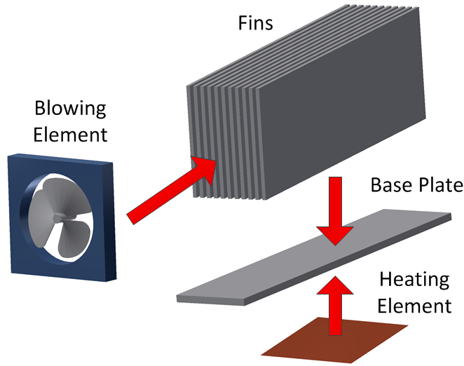
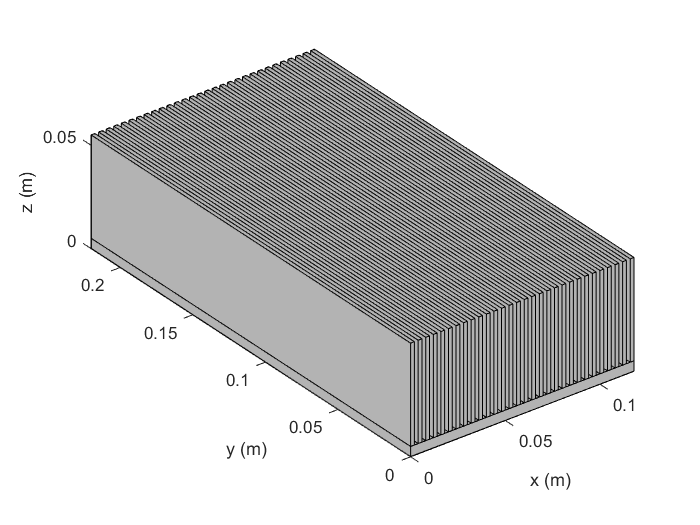
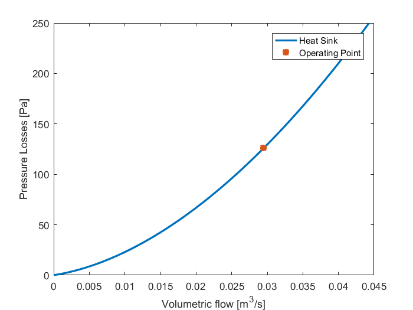

Heat Sink model
General overview
To improve the cooling perfomances of a certain device, a heat sink is often. The main objective is to create a heat spreader and therefore "increase" the contact surface between the device to be cooled and the external fluid.
In this model, the heat sink is considered the association of 4 different elements:
- Fins: corresponds to the additional surfaces added to increase the surface of the component to be cooled
- Base Plate: is the part in contact between the cooled surface and the fins. Its surface however can be different from the cooled surface, in that case, the spreading effect needs to be taken into account
- Heating element: is the element to be cooled
- Blowing element: is the element that determines the properties of the fluid arriving and passing through the fins of the heat sink 
Heat Sink creation
In order to create the heat sink all the elements must be created and added to the heat sink model. The method to perform this operation is heatsinkElt.addElement(element name).
IMPORTANT: for the blowing element, fins and base plate if the element type has been previously added, the new component will substitute the previous one.
In addition, the heating elements can be removed as well using the following method heatsinkElt.removeElement(element name)
Base Plate
The base plate is the element performing the mechanical association between the cooled surface and the fins. Its lower surface may differ from the surface to be cooled resulting in an additional "spreading resistance". The list of different baseplates that can be used are:
- BasePlate : a simple basic model of baseplate
Fins
The fins are the additional surfaces to "increase" the cooled surface, these fins cause as well friction losses when forced air circulates between them. The cooling and pressure losses performances depend on the shape of the fins. In this library the different shapes are:
Blowing Element
Since the model is described for forced convection we need an element that creates the movement of the air
- FanDiscreteDC : correspond to a fan used with a DC power supply
- Forced Air : correspond to a fixed imposed air speed
Surface to cool
The different element surfaces that can be cooled with the heatSink are:
- Heating Surface: correspond to a surface where we know the losses, the dimensions and the maximal temperature
Specific properites and methods
Apart from the usual Comp3d.Composite properties & methods some additional are included for this specific model
Additional properties
- finElement: property to point at the fin element
- basePlate: property to point at the base plate
- blowingElement: property to point at the blowing element
- elementsToCool: list of elements to be cooled
The specific methods of the Comp3d.HeatSink class are:
- displayPressureLossesCurve: displays the pressure losses curve of the heat sink, the operating point and if a fan is included the pressure losses curve of the fan
Example of utilization
For the example we will consider a heat sink with rectangular fins and where the air is forced at a certain speed to cool a 100x200 surface. The power is 50W and the First, the elements are created:
myBasePlate = Comp3d.BasePlate('name','basePlate','level',2,'length',0.22,'width',0.12,'conductingMaterial',2); myFins = Comp3d.RectangularFins('name','fins','level',2,'length',0.22,'numberOfFins',30,... 'thickness',2e-3,'height',5e-2,'gapBetweenFins',2e-3,'conductingMaterial',2); myBlowingElement = Cooling.ForcedAir('name','forcedAir','airSpeed',5,'temperature',25); mySurface = Comp3d.HeatingSurface('name','heatingSurface','power',50,'length',0.2,'width',0.1,'tMax',125);
Then the composite is created, the elements are added to the heat sink and the parameters are computed
myHeatSink = Comp3d.HeatSink('name','heatSink'); myHeatSink.addElement(myBasePlate); myHeatSink.addElement(myFins); myHeatSink.addElement(myBlowingElement); myHeatSink.addElement(mySurface); myHeatSink.computeModelParameters; myHeatSink.computeOutputData; myHeatSink.displayInformation;
====================================================
Information of basePlate [Comp3d.BasePlate]
----------------------------------------------------
Shape
Dimensions
width: 0.118
length: 0.22
height: 0.005
----------------------------------------------------
Materials
conductingMaterial: Aluminium
----------------------------------------------------
Geometric Data
Manufacturing Volume: 0.132 l
Weight: 0.3564 Kg
----------------------------------------------------
Cost Data
Total: $ 0.00
----------------------------------------------------
Optimization Constraints
----------------------------------------------------
Thermal Parameters
Thermal Resistance: 0.002815 °C/W
====================================================
====================================================
Information of fins [Comp3d.RectangularFins]
----------------------------------------------------
Shape
Dimensions
thickness: 0.002
length: 0.22
height: 0.05
numberOfFins: 30
gapBetweenFins: 0.002
----------------------------------------------------
Materials
conductingMaterial: Aluminium
----------------------------------------------------
Geometric Data
Manufacturing Volume: 1.298 l
Weight: 1.782 Kg
----------------------------------------------------
Cost Data
Total: $ 0.00
----------------------------------------------------
Optimization Constraints
----------------------------------------------------
====================================================
Output Data
Losses: 50 W
Inside Temperature: 27.7 °C
====================================================
====================================================
Information of heatSink [Comp3d.HeatSink]
----------------------------------------------------
Geometric Data
Manufacturing Volume: 1.43 l
Weight: 2.138 kg
----------------------------------------------------
Thermal Parameters
Rth: 0.05397 °C/W
====================================================
Output Data
Losses: 50 W
Base Temperature: 27.7 °C
Exit Temperature: 60.15 °C
Pressure losses: 126 Pa
====================================================
The drawing and the pressure losses curve can be as well displayed
myHeatSink.drawComponent; myHeatSink.displayPressureLossesCurve; 